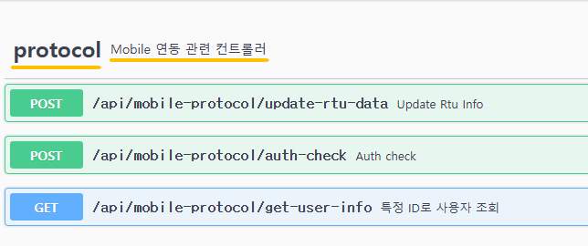
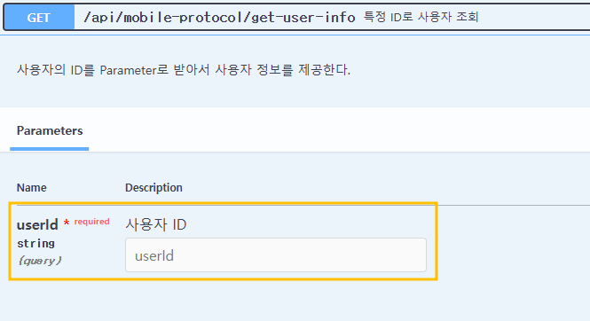

Swagger 설정
개요
-
웹 서비스 명세를 문서화 해주는 오픈 소스 소프트웨어 프레임워크.
-
API에 대한 명세(Spec)을 관리하고 REST API를 문서화하는 도구.
-
API가 수정되면 문서는 자동으로 갱신된다.
Application.yml 기본
# 기본 옵션
springdoc:
version: ${project.version}
api-docs:
enabled: true # /v3/api-docs endpoint
swagger-ui:
path: /swagger-ui # Swagger-UI의 경로를 /swagger-ui로 설정
path-to-match: /api/** # 매칭되는 경로의 api들을 문서에 표현.
disable-swagger-default-url: true # Swagger UI의 기본 설정으로 제공되는 Petstore 예제 URL을 비활성화하는 기능.
display-request-duration: true # 각 요청에 걸린 시간을 보여주는 기능.
# 추가 옵션
springdoc:
paths-to-exclude: /api/mobile-protocol/set-rtu-data # 문서에 포함하지 않을 api
api-docs:
path: /v3/api-docs # JSON 형식의 OpenAPI 문서가 /v3/api-docs 경로에서 제공
swagger-ui:
enabled: false # 외부에 swagger-ui를 노출시키지 않을때 사용하는 옵션
Swagger 의존성 추가
pom.xml 의존성 추가
<dependency>
<groupId>org.springdoc</groupId>
<artifactId>springdoc-openapi-ui</artifactId>
<version>1.8.0</version>
</dependency>
<dependency>
<groupId>org.springdoc</groupId>
<artifactId>springdoc-openapi-starter-webmvc-ui</artifactId>
<version>2.5.0</version>
</dependency>
SwaggerConfig.java
/**
* Springdoc - Swagger 설정 클래스
*/
@Configuration
public class SwaggerConfig {
@Value("${project.name}")
private String projectName;
@Value("${springdoc.version}")
private String springdocVersion;
@Value("${project.patch-date}")
private LocalDateTime patchDate;
@Bean
public OpenAPI openAPI() {
return new OpenAPI()
.components(new Components())
.info(apiInfo());
}
private Info apiInfo() {
return new Info()
.title(String.format("%s", projectName))
.version(String.format("%s", springdocVersion))
.description("patch date: " + patchDate.format(DateTimeFormatter.ofPattern("yyyy-MM-dd HH:mm:ss")))
.license(new License().name("Apache 2.0").url("http://springdoc.org"));
}
}
Info Object
| Field Name | Type | Description |
|---|---|---|
| title | string | 프로젝트 타이틀 |
| description | string | 프로젝트 description |
| termsOfService | string | API 약관 |
| contact | Contact Object | Contact information |
| license | License Object | License information |
| version | string | version 정보 |
@Tag
API 그룹을 정의, 분류할 때 사용한다.
-
name : 태그의 이름
-
description : 태그에 대한 설명
@Tag(name = "protocol", description = "Mobile 연동 관련 컨트롤러")
public class ProtocolController {
private static final String AUTH_CHECK_PATH = "auth-check";
...
}

@Parameter(hidden=true) or @Operation(hidden = true) or @Hidden
문서에서 제공하지 않을 API 내용을 표현할 때 사용한다.
@Hidden
@GetMapping("getMappingTest")
public void test() {
protocolService.getMethodTest("test");
}
@Operation
특정 Endpoint에 대한 메타데이터를 정의한다. Endpoint에 대한 설명, 요청 방식, 응답코드 등을 설정할 수 있다.
-
summary : 간단한 설명 설정
-
description : 상세 설명 설정
-
method : 요청 방식을 지정할 수 있다.
-
tags : 그룹을 지정할 수 있다.
@Operation(summary = "특정 ID로 사용자 조회",
description = "사용자의 ID를 Parameter로 받아서 사용자 정보를 제공한다.",
method = "GET"
)
@GetMapping("get-user-info")
public void getUserInfo(@Parameter(description = "사용자 ID", required = true)
@RequestParam String userId) {
protocolService.getUserInfo(userId);
}
@ApiResponses
API의 응답코드와 설명을 설정할 수 있다.
@ApiResponses(value = {
@ApiResponse(responseCode = "200",
description = "성공 또는 실패 응답",
content = @Content(mediaType = "application/json",
schema = @Schema(type = "object"),
examples = {
@ExampleObject(name = "성공", value = "{\"result\": 1}"),
@ExampleObject(name = "실패", value = "{\"result\": 0, \"errorMsg\" : \"error message\"}")}))
})
@PostMapping(path = UPDATE_RTU_DATA, consumes = MediaType.APPLICATION_JSON_VALUE)
public Map<String, Object> updateRtuData(@RequestBody final RtuModel rtuModel) {
return protocolService.updateRtuData(rtuModel);
}

@Parameter
사용되는 파라미터에 대한 정보를 정의할 수 있다.
@GetMapping("get-user-info")
public void getUserInfo(@Parameter(description = "사용자 ID", required = true)
@RequestParam String userId) {
protocolService.getUserInfo(userId);
}

Schema
특정 모델 클래스나 필드에 대한 메타데이터를 정의한다. 모델의 속성 설명, 예제 등을 설정할 수 있다.
public class RtuModel {
@Id
@JsonAlias({"rtuID", "rtu_id"})
@Schema(title = "RTU ID", description = "단말 ID", type="String", requiredMode = Schema.RequiredMode.REQUIRED, example = "R0001")
private String rtuId;
@Schema(title = "RTU Type", description = "Rtu Type", type="integer", example = "0")
@JsonAlias({"rtu_type", "rtuType"})
private short rtuType;
@Schema(title = "Flag", description = "정수형 flag 값", type="String", example = "0")
@JsonAlias({"flag"})
private String flag;
@Schema(title = "Project Seq", description = "프로젝트 seq 값", type="Integer", example = "63")
@JsonAlias({"project_seq", "projectSeq"})
private int projectSeq; // Project seq
@Schema(title = "Lon", description = "Longitude 값", type="Double", example = "37.6369")
@JsonAlias({"recentLon","recent_lon"})
private double recentLon; // Recent Lon
@Schema(title = "Lat", description = "Latitude 값", type="Double", example = "127.0277")
@JsonAlias({"recent_lat", "recentLat"})
private double recentLat;
@Hidden
private int updateStatus;
}
@Schema 주요 옵션
- description : 필드 또는 클래스에 대한 설명한다.
- example : 예제 값을 제공하여 API 문서에서 해당 필드의 사용 예시를 보여준다.
- type : 테이터의 유형을 명시한다.
- format : 데이터의 형식을 지정한다. (ex : date, date-time, email)
- requiredMode : 필수 인자값 여부 지정한다.
- title : 필드나 모델의 제목을 정의한다.
- defaultValue : 기본값을 설정한다.
- minimum / maximum : 숫자형 데이터의 최소값 및 최대값을 설정한다.
- minLength / maxLength : 문자열의 최소 및 최대 길이를 설정한다.
- nullable : 필드가 null 값을 가질 수 있는지 여부를 지정한다.
- hidden : 모델에는 존재하지만 사용자로부터 입력을 받지 않는 데이터에 대해 지정한다.
참고사항
1. 라이브러리 및 유지 관리 상태
springdoc-openapi
-
OpenAPI 3.0을 지원하기 위해 설계된 라이브러리.
-
Spring Boot와의 호환성이 더 뛰어나며 유지 관리와 업데이트가 활발.
-
최근에는 springfox보다 권장되는 방식으로 자리잡았다.
springfox
-
주로 Swagger 2.0 사양을 지원하는 라이브러리, 오랫동안 사용되어 온 표준.
-
최근 업데이트가 거의 이루어지지 않으며, Spring Boot 2.4 이상부터 호환성 문제가 생기는 경우가 많다.
2. OpenAPI 및 Swagger 버전
springdoc-openapi
-
OpenAPI 3.0 사양을 따르므로 최신 API 문서 표준에 적합.
-
springdoc-openapi-ui는 OpenAPI 문서 작성에 있어 더 유연한 구조와 다양한 어노테이션을 지원
springfox
- Swagger 2.0 사양을 지원하며, OpenAPI 3.0 기능을 완벽히 지원하지 않는다.
3. 의존성 및 설정 간소화
springdoc-openapi
-
Spring Boot 2.x와 매우 쉽게 통합된다.
-
필요한 의존성을 추가하고 실행만 하면 자동으로 API 문서화가 이루어지며, 별도의 설정이 거의 필요 없다.
springfox
- 추가적인 설정이 필요한 경우가 많으며, 특히 Spring Boot 2.4 이상에서는 @EnableSwagger2 등의 어노테이션과 추가 설정을 요구하는 경우가 있다.
4. Spring Boot 버전 호환성
springdoc-openapi
-
Spring Boot 2.4 이상에서도 안정적으로 작동.
-
Spring Boot 3.x 버전까지도 지원이 이어지고 있다.
springfox
-
Spring Boot 2.4 이상부터 호환성 문제가 자주 발생하며, 최신 버전과의 호환성 보장이 어렵다.
-
특히 Spring Boot 2.6 이상에서는 정상 동작하지 않는 이슈가 있다.
-
2018년부터 2020년까지 업데이트가 없었고, 2020년 6월과 7월 사이에 마지막 업데이트를 한 이후 후속 업데이트가 없다.